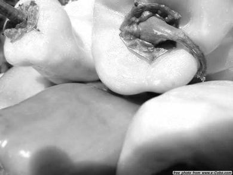

CSCI3290 Assignment 2- Contrast Preserving Decolorization
Oct 27, 2014

Introduction
Decolorization – the process to transform a color image to a grayscale one – is a basic tool in digital printing, stylized black-and-white photography, and in many single channel image processing applications. In this project, an optimization approach will be implemented aiming at maximally preserving the original color contrast.
Basic Decolorization Algorithm
The Algorithm is as follows
Step 1: Convert the input image to LAB space.
The algorithm to converted RGB space into LAB space is from here:
Mark Ruzon from C code by Yossi Rubner, 23 September 1997.Step 2: Compute Delta(p,q)for each two neighboring pixel based on the Euclidian distance in Lab color space.
Step 3: Construct the linear system based
Step 4: Solve the liear system using '\' operator in Matlab and reconstruct the gray image
We can notice that this method is not stable, possibly due to the ambuiguity in the color order.

Real-time Contrast Preserving Linear Mapping Decolorization
We use the degree one multivariate polynomial model to represent grayscale output g, which is indeed a linear com- bination of color channels. We further enforce a positive constraint and an energy conservation constraint on the weights so that the grayscale image is within the range [0, 1]. The constraints also serve a second purpose: the neutral color would have the same intensity after color-to-gray conversion. Sim- ple though the defined constraints are, they work effectively in re- ducing the solution space in a discrete fashion.
Empirically, it is found that slightly varying the weights wr , wg , wb would not change grayscale appearance too much. We propose to discretize the solution space of wr , wg , wb in the range of [0, 1] with interval 0.1 and perform the search to find the optimal value.
Since the mapping is only linear and the optimization method is exhaustive search over certain candidates, it may produces unsatisfactory results on some color images.

Decolorization Evaluation: Color Contrast Preserving Ratio (CCPR) on 4 methods
To quantitatively evaluate the decolorization algorithms, we propose a new metric. It is based on the finding that if the color difference δ is smaller than a threshold τ, it becomes nearly invisible in human vision. The task of contrast-preserving decolorization is therefore to maintain color change that is perceivable by human.
The 4 decolorization algorithms are as follows:
Resulting CCPR:
average score under different thresholds (1 to 15)
| Sample Images | cprgb2color() | Matlab rgb2color() | L Channel in Lab | Linear Mapping |
|---|---|---|---|---|
| 1 | 0.209158 | 0.356491 | 0.266511 | 0.340339 |
| 2 | 0.943325 | 0.860531 | 0.928000 | 0.864799 |
| 3 | 0.654819 | 0.827005 | 0.632354 | 0.730671 |
| 4 | 0.435429 | 0.500386 | 0.472529 | 0.495572 |
| 5 | 0.483057 | 0.548331 | 0.647499 | 0.593041 |
| 6 | 0.697269 | 0.322822 | 0.375607 | 0.553334 |
| 7 | 0.988644 | 0.379993 | 0.680732 | 0.329731 |
| 8 | 0.545917 | 0.100930 | 0.393925 | 0.664103 |
| 9 | 0.247654 | 0.320915 | 0.337602 | 0.296252 |
| 10 | 0.419936 | 0.545748 | 0.478594 | 0.590657 |
Gallery
Each row contains decolorized image by 4 algorithms in corresponding order:
cprgb2color(), Matlab rgb2color(), L Channel in Lab, Linear Mapping
 |
 |
|
 |
|
| |
 |
 |
 |
 |
 |
 |
 |